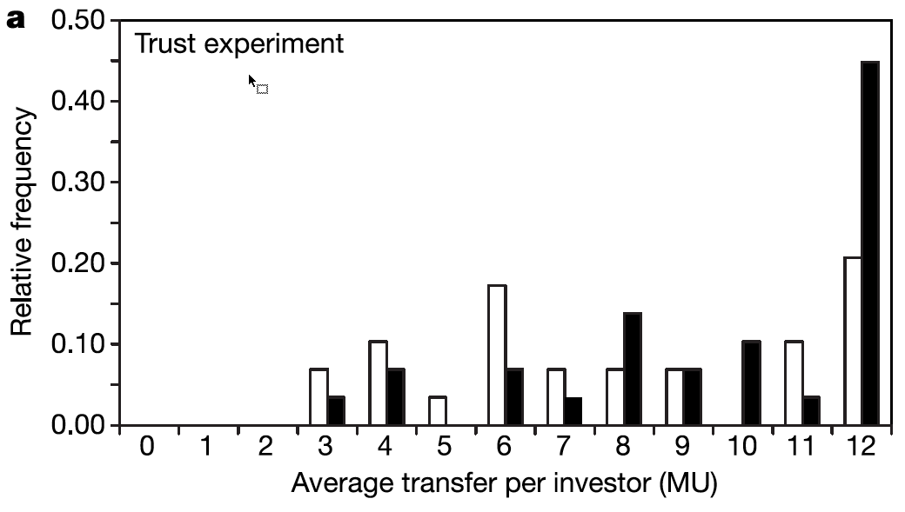
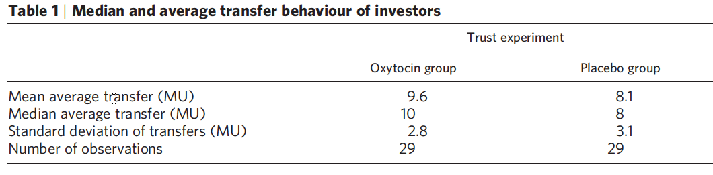
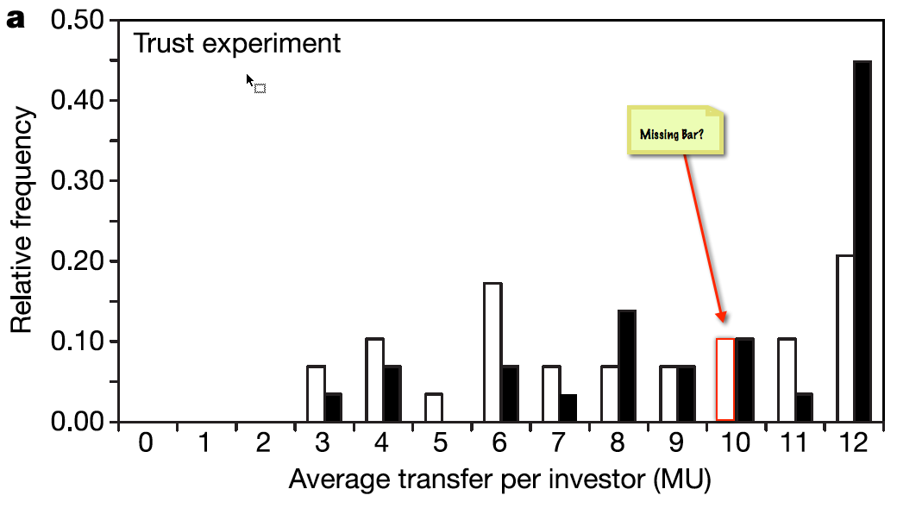

library(tidyverse)
placebo <- tibble(
Group = "Placebo",
MU = c(3, 3, 4, 4, 4, 5, 6, 6, 6, 6, 6, 7, 7, 8, 8, 9, 9, 11, 11, 11, 12, 12, 12, 12, 12, 12),
)
oxytocin <- tibble(
Group = "Oxytocin",
MU = c(3, 4, 4, 6, 6, 7, 8, 8, 8, 8, 9, 9, 10, 10, 10, 11, 12, 12, 12, 12, 12, 12, 12, 12, 12, 12, 12, 12, 12)
)
zak <- bind_rows(placebo, oxytocin) |>
mutate(
Group = as_factor(Group)
)I’m writing a new textbook on introductory statistics, and I decided to include an example based on Paul Zak‘s intriguing work on the role of the hormone oxytocin in trust between strangers. In particular, I started looking at his 2005 paper in Nature (Kosfeld et al. 2005). Yes, Nature, one of the top science journals. A journal with an impact factor of about 38, and a rejection rate probably fairly close to 100%. It’s a journal you’d expect published pretty decent stuff and subjects articles to fairly rigorous scrutiny.
Before I begin, I have no axe to grind here with anyone. I just want to comment on some stuff I found and leave everyone else to do what they like with that information. I have no doubt Dr. Zak has done a lot of other work on which he bases his theory, I’m not trying to undermine that work, I’m more wanting to make a point about the state of the top journals in science. All my code here is for R.
The data I was looking at relates to an experiment in which participants were asked to invest money in a trustee (a stranger). If they invested, then the total funds for the investor and trustee increased. If the trustee shares the proceeds then both players end up better off, but if the trustee does not repay the investors’ trust by splitting the fund then the trustee ends up better off and the investor worse off. The question is, will investors trust the trustees to split the funds? If they do then they will invest, if not they won’t. Critically, one group of investors were exposed to exogenous oxytocin (N = 29), whereas a placebo group were not (N = 29). The oxytocin group invested significantly more than the placebo control group suggesting that oxytocin had causally influenced their levels of trust in the trustee. This is the sort of finding that the media loves.
The paper reports a few experiments, I want to focus on the data specifically related to trust shown in Figure 2a (reproduced below):

The good thing about this figure is that it shows relative frequencies, which means that with the aid of a ruler and a spreadsheet we can reconstruct the data. Based on the figure the raw data is as follows:
The problem being that this gives us only N = 26 in the placebo group. Bollocks! Ok, well perhaps they reported the wrong N. Here’s their table of descriptives:

Let’s have a look at the descriptives I get:
zak_tbl <- zak |>
group_by(Group) |>
summarize(
Mean = mean(MU),
Median = median(MU),
SD = sd(MU),
N = n()
)
knitr::kable(zak_tbl, dp = 1)| Group | Mean | Median | SD | N |
|---|---|---|---|---|
| Placebo | 7.923077 | 7.5 | 3.186510 | 26 |
| Oxytocin | 9.551724 | 10.0 | 2.848386 | 29 |
For the oxytocin group the mean, median and SD match, but for the placebo group they don’t. Hmmm. So, there must be missing cases. Based on where the median is, I guessed that the three missing cases might be values of 10. In other words, Figure 2a in the paper, ought to look like this:

So, let’s adjust placebo group data and recalculate the summary stats:
zak <- zak |>
add_row(Group = "Placebo", MU = 10) |>
add_row(Group = "Placebo", MU = 10) |>
add_row(Group = "Placebo", MU = 10)
zak_tbl <- zak |>
group_by(Group) |>
summarize(
Mean = mean(MU),
Median = median(MU),
SD = sd(MU),
N = n()
)
knitr::kable(zak_tbl, dp = 1)| Group | Mean | Median | SD | N |
|---|---|---|---|---|
| Oxytocin | 9.551724 | 10 | 2.848386 | 29 |
| Placebo | 8.137931 | 8 | 3.079009 | 29 |
They now match the table in the paper. So, this gives me confidence that I have probably correctly reconstructed the raw data despite Figure 2’s best efforts to throw me off of the scent. Of course, I could be wrong. Let’s see if my figures match their analysis. They did a Mann-Whitney U that yielded a p-value of 0.05887, which they halved to report one-tailed as .029. Notwithstanding the fact that you probably shouldn’t do one-tailed tests, ever, they conclude a significant between group difference. I replicate their p-value, again convincing me that my reconstructed data matches their raw data:
wilcox.test(MU~Group, zak)
Wilcoxon rank sum test with continuity correction
data: MU by Group
W = 540, p-value = 0.05887
alternative hypothesis: true location shift is not equal to 0So, all well and good. There are better ways to look at this than a Mann-Whitney test though, so let’s use some of Rand Wilcox’s robust tests. First off, a trimmed mean and bootstrap:
Call:
yuenbt(formula = MU ~ Group, data = zak, tr = 0.2, nboot = 2000,
side = T, alpha = 0.05)
Test statistic: 1.7731 (df = NA), p-value = 0.057
Trimmed mean difference: 1.89474
95 percent confidence interval:
-0.0832 3.8727 Gives us a similar p-value to the Mann-Whitney and a confidence interval for the difference that contains zero. However, the data are very skewed indeed: Perhaps we’re better off comparing the medians of the two groups. (Medians are no-where near as biased by skew as means):
pb2gen(MU~Group, data = zak, alpha=.05, nboot=2000, est = "median")Call:
pb2gen(formula = MU ~ Group, data = zak, est = "median", nboot = 2000,
alpha = 0.05)
Test statistic: 2, p-value = 0.1915
95% confidence interval:
-1 6 The p-value is now a larger .179 (which even if you decide to halve it won’t get you below the, not very magic, .05 threshold for significance). So, the means might be significantly different depending on your view of one-tailed tests, but the medians certainly are not. Of course null hypothesis significance testing is bollocks anyway (see my book, or this blog) so maybe we should just look at the effect size. Or maybe we shouldn’t because the group means and SDs will be biased by the skew (SDs especially because you square the initial bias to compute it). Cohen’s d is based on means and SDs so if these statistics are biased then d will be too. I did it anyway though, just for a laugh:
library(effectsize)
cohens_d(MU~Group, data = zak)Cohen's d | 95% CI
-------------------------
0.48 | [-0.05, 1.00]
- Estimated using pooled SD.The result? About half a standard deviation difference (notwithstanding the bias). That’s not too shabby, although it’d be even more un-shabby if the estimate wasn’t biased. Finally, and notwithstanding various objections to using uninformed priors in Bayesian analysis) we can use the BayesFactor packaged to work out a Bayes Factor.
library(BayesFactor)
ttestBF(formula = MU~Group, data = zak)Bayes factor analysis
--------------
[1] Alt., r=0.707 : 1.037284 ±0.01%
Against denominator:
Null, mu1-mu2 = 0
---
Bayes factor type: BFindepSample, JZSThe Bayes factor is 1.03, which means that there is almost exactly equal evidence for the null hypothesis as the alternative hypothesis. In other words, there is no support for the hypothesis that oxytocin affected trust.
So, Nature, one of the top journals in science, published a paper where the evidence for oxytocin affecting trust was debatable at best. Let’s not even get into the fact that this was based on N = 58. Like I said, I’m sure Dr. Zak has done many other studies and I have no interest in trying to undermine what he or his colleagues do, I just want to comment on this isolated piece of research and offer an alternative interpretation of the data. There’s lots of stuff I’ve done myself that with the benefit of experience I’d rather forget about, so, hey, I’m not standing on any kind of scientific high ground here. What I would say is that in this particular study, based on the things least affected by the shape of the data (medians) and a (admittedly using uninformed priors) Bayesian analysis there is not really a lot of evidence that oxytocin affected trust.
References
Kosfeld, Michael, Markus Heinrichs, Paul J. Zak, Urs Fischbacher, and Ernst Fehr. 2005. “Oxytocin Increases Trust in Humans.” Nature 435 (7042): 673–76. https://doi.org/10.1038/nature03701.
Citation
BibTeX citation:
@online{field2014,
author = {Field, Andy},
title = {Perhaps My Oxytocin Was Low When {I} Read This Paper},
date = {2014-10-31},
url = {https://profandyfield.com/posts/2014_10_31_oxytocin/},
langid = {en}
}
For attribution, please cite this work as:
Field, Andy. 2014. “Perhaps My Oxytocin Was Low When I Read This
Paper.” October 31, 2014. https://profandyfield.com/posts/2014_10_31_oxytocin/.